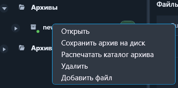

Операции с архивами
Выберите архив в дереве слева. Действия над ним появляются над таблицей «Файлы архива». Часть команд доступна также в контекстном меню дерева.

Обычный архив APKW
| Действие | Результат и условия |
|---|---|
| Открыть | Загружает список файлов выбранного архива. |
| Сохранить архив на диск | Копирует один архив в выбранный файл .apkw.
При совпадении имени диалог предлагает подтвердить замену. Исходный архив сохраняется. |
| Конвертировать APKW в APK | Кнопка над таблицей создаёт в выбранной папке комплект
.apk и связанных файлов .opk для старой программы.
Это преобразование, а не обычное копирование архива. |
| Распечатать каталог архива | Открывает печать списка программ контроля. Содержимое программ не печатается этой командой; для пустого списка выводится сообщение. |
| Добавить файл | Предлагает выбрать один файл .opkw.
Требуются права изменения архива; запись с совпадающим именем не заменяется. |
| Вставить файл | Добавляет файл из буфера архивов. Нужны права изменения и ранее выполненное копирование или вырезание. |
| Удалить архив | После подтверждения удаляет архив вместе с содержимым из хранилища. Требуются права изменения. |
Архивы на проверке
Для выбранного архива на проверке предусмотрена кнопка «Проверить все файлы ещё раз». Приложение последовательно повторяет трансляцию файлов и обновляет сведения об ошибках. Это проверка текста, она не запускает оборудование.
Удаление архива на проверке требует прав изменения и подтверждения. Сохранение в APKW, преобразование в APK, печать каталога и добавление внешнего файла описанными выше кнопками относятся к обычным архивам.
Права и выбор элемента
Создание, добавление, вырезание, вставка и удаление доступны администратору и разработчику ПК. Регулировщик может просматривать и копировать файлы, импортировать готовые архивы и сохранять архивы на диск, но не изменять их содержимое.
При выборе другого элемента дерева состав команд меняется. Отсутствующая в контекстном меню команда может находиться в панели над таблицей.
Копирование и перенос программ между архивами описаны в разделе «Операции с файлами архива».